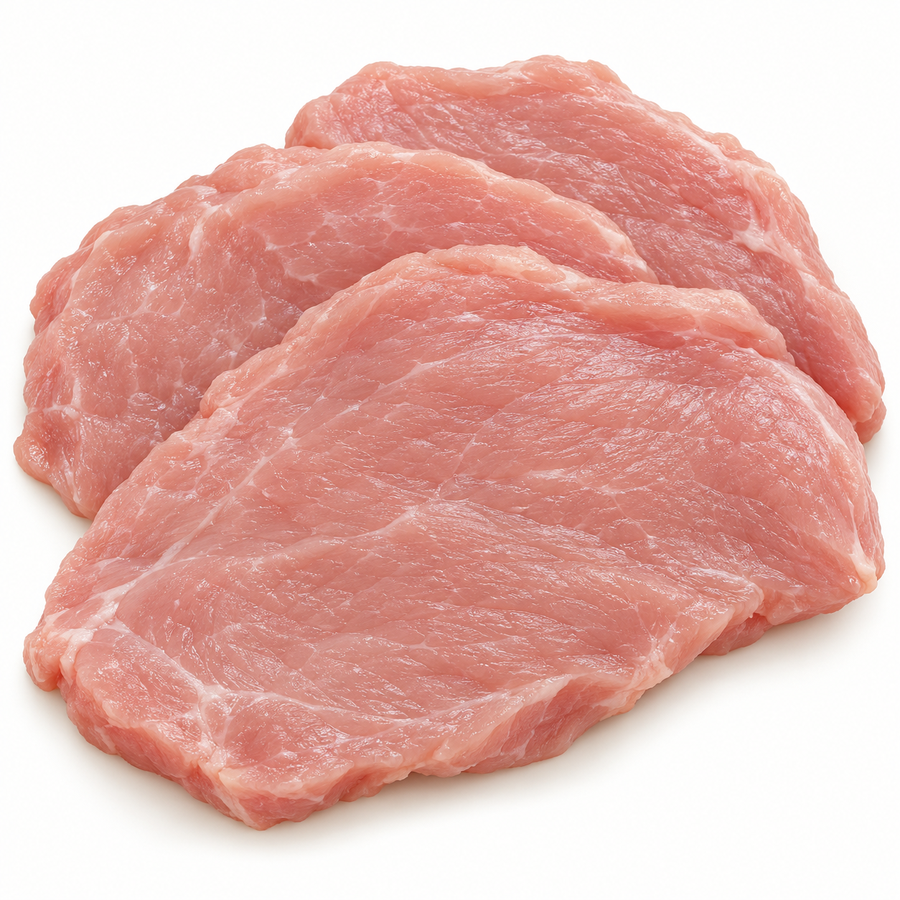
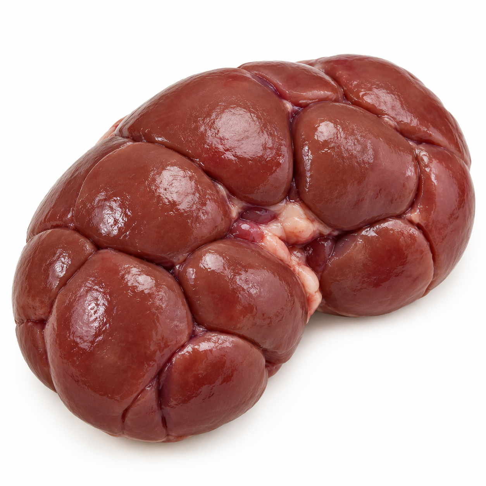
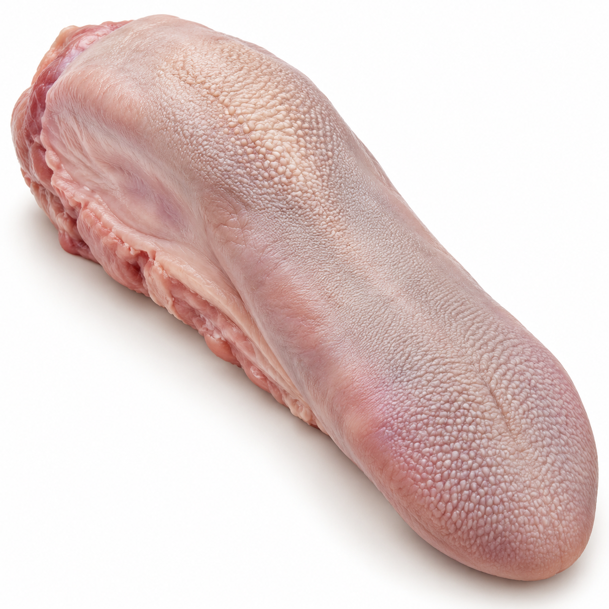
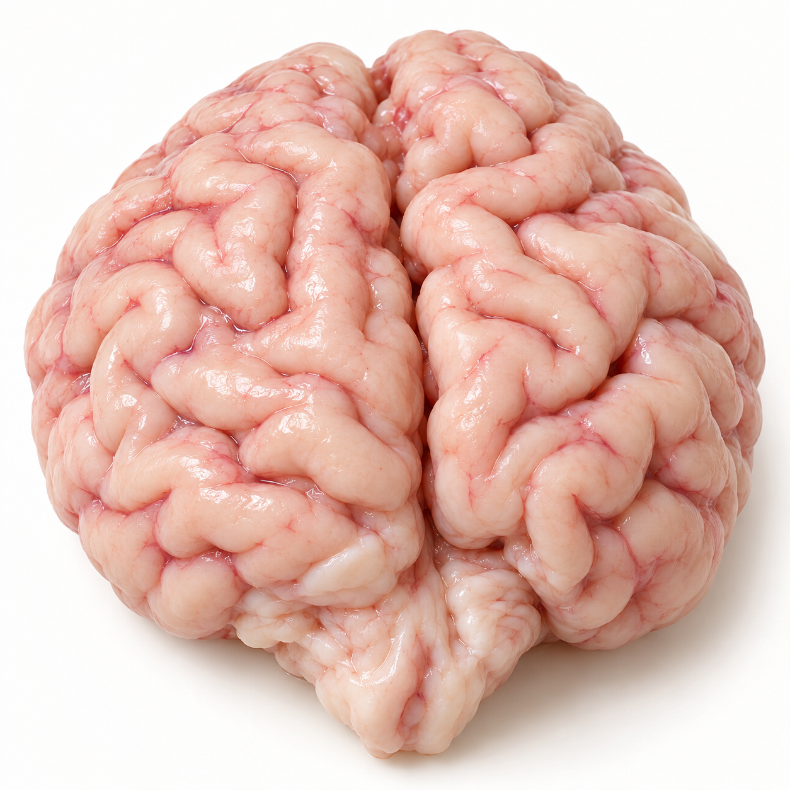

Gursha ingredient illustrations
Created for Gursha with OpenAI ImageGen on 25 October 2026. These are AI-generated culinary illustrations, not photographs. They illustrate a food family; they cannot verify species, freshness, food safety, preparation state or an exact source-table entry.
Usage and provenance
These original project assets were generated for the Gursha interface. No third-party stock photograph was used as an input. The project does not claim that they are public-domain photographs or that their appearance proves nutritional composition. Source-photo licenses for other assets remain linked in each food view and in the image manifest.
Veal
Prompt: raw lean veal cutlets, pale rose-pink, centered on a plain warm-white background; tight culinary close-up without garnishes, utensils or text.

Calf kidney
Prompt: one cleaned raw calf kidney, showing its distinctive lobulated exterior, centered on a warm-white background; culinary still life without labels or other organs.

Calf tongue
Prompt: one cleaned uncooked calf tongue, elongated tapering shape and pink-grey textured surface, centered on a warm-white background; culinary still life without labels or other food.

Calf brain
Prompt: one cleaned raw calf brain, whole paired lobes with soft folded convolutions, pale pink ivory, centered on a warm-white background; culinary still life without a medical setting or labels.
